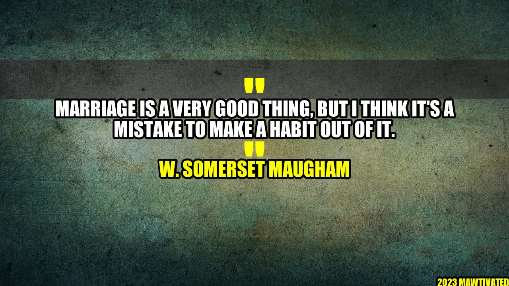

Marriage: To do or Not to do?

There was a young girl named Sarah who had always dreamt of getting married. She had everything planned out - the wedding dress, the flowers, the venue, and even the honeymoon destination. She met her dream guy, they fell in love, and eventually tied the knot. But then the reality hit her hard. The marriage wasn't as perfect as she had thought it would be. There were fights, disagreements, and compromises. Sarah started to question whether marriage was really worth it.
Author W. Somerset Maugham once said, "Marriage is a very good thing, but I think it's a mistake to make a habit out of it." These words hold a lot of truth. Marriage is a beautiful thing, but it's not for everyone, and it shouldn't be taken lightly. In this article, we'll explore the pros and cons of marriage, and help you decide whether it's something you really want.
The Pros of Marriage
- Companionship: Marriage provides you with a life partner who is always there for you in good times and bad.
- Shared Responsibility: You have someone to share the responsibilities of life with. This could be raising children, paying bills, or taking care of the house.
- Security: Marriage provides a sense of security as you have someone to rely on no matter what.
- Legal Benefits: There are a lot of legal benefits to being married such as tax breaks, inheritance rights, and insurance benefits.
- Social Status: Society puts a high value on marriage, and being married can lead to a higher social status.
The Cons of Marriage
- Loss of Independence: Marriage means sharing your life with someone else. You may have to give up some of your individuality and freedom.
- Financial Strain: Marriage can be expensive. Weddings, children, and maintaining a household all come with costs.
- Pressure to conform: Marriage means conforming to societal norms and expectations. You may be expected to have children, raise them in a certain way, and follow certain gender roles.
- Strained Relationships: Marriage isn't always easy, and it can put a strain on your relationship with your partner, friends, and family.
- Divorce: Marriage is a commitment, but if it doesn't work out, it can be a painful and costly process to get divorced.
Examples of Successful and Unsuccessful Marriages
There are many examples of both successful and unsuccessful marriages. Some of the most successful marriages are those in which both partners understand the commitment they have made and work towards making it work. Some examples of successful marriages are:
"My grandparents were married for over 50 years and were still deeply in love. They understood the importance of communication, trust, and compromise."
On the other hand, some marriages simply don't work out. Some examples of unsuccessful marriages are:
"My friend got married to her high school sweetheart, but they were never really compatible. They constantly fought and eventually got divorced after only a year of marriage."
Conclusion
So, should you get married or not? The answer is not a simple one, as it depends on your individual circumstances. However, here are three things to consider before taking the plunge:
- Are you ready to share your life with someone else, complete with all its ups and downs?
- Do you feel financially and emotionally stable enough to take on the responsibilities of marriage?
- Are you ready to sacrifice some of your independence in order to make the relationship work?
At the end of the day, marriage is a personal choice that should not be taken lightly. Think it through, weigh the pros and cons, and make the decision that's right for you.
Practical Tips for a Successful Marriage
- Communicate openly and honestly with your partner. This is the foundation of a healthy relationship.
- Understand and respect each other's needs and boundaries.
- Compromise and work towards solutions that benefit both partners.
- Make time for each other, even when life gets busy.
- Don't forget to have fun and enjoy each other's company!
Hashtags: #Marriage #ProsandCons #RelationshipAdvice
SEO Keywords: Marriage, Pros and Cons of Marriage, Successful and Unsuccessful Marriages
Article Category: Relationships and Self Improvement
Curated by Team Akash.Mittal.Blog
Curated by Team Akash.Mittal.Blog
Share on Twitter Share on LinkedIn